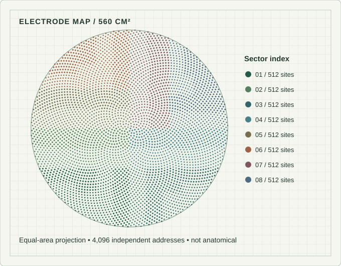

Neural research / D4096 / 0.2
D4096.
4,096 scalp contacts. One separate signal path per contact.
A high-density EEG design with separately sampled channels and explicit signal-quality checks. No Rexzen dense headset has been built or tested on people.

What we checked
Verified in software.
Unverified on a head.
480,000Synthetic packets
24.576 Mb/sNative sample payload
80 trialsReal 512-channel session
The clean digital replay round-tripped every signed sample. The separate analysis of a published visual task showed no consistent advantage from adding channels in that one session. The 512-site test scored 42.3% balanced accuracy; the shuffled-label mean was 25.9%. Neither proves 4,096-channel wearable performance.
What would make it better
Pass the fit and signal tests first.
The design requires at least 4,000 independently usable contacts in any window labeled full-density. The decisive tests are contact quality through ordinary hair, noise and timing on real 4,096-channel hardware, and a blinded task comparison against established high-density systems. Thought decoding and superiority to implanted BCIs are not claimed.
Release files
Inspect and reproduce.
- Read the engineering reportNoise, reference and timing budgets; manufacturing gates
- Download engineering PDFInvestor and technical review
- Download all 4,096 addressesCoordinates, sectors, tiles and lanes
- Download source and test suiteEditable report and code, with no raw EEG
- Software and geometry resultsPacket throughput and modeled electrical budgets
- 512-channel EEG reanalysisResults, blinding limits and OSF checksum
- Primary evidenceSources and supporting excerpts